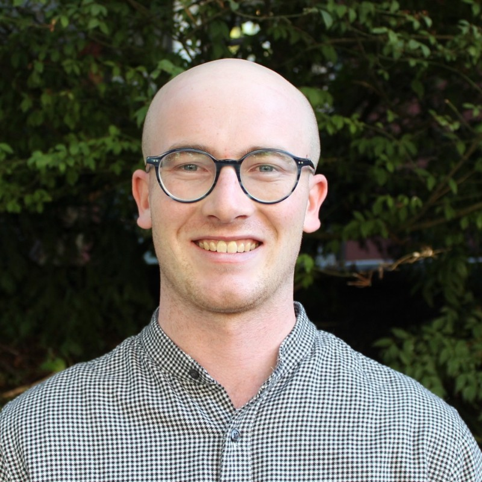

Master of Urban Planning student at the University of Washington, with hands-on experience in transportation policy, climate resilience, GIS mapping, and international urban development.

He / Him · MUP Student
Noal Leonetti is a graduate student pursuing a Master of Urban Planning at the University of Washington's College of Built Environments in Seattle. A Bowdoin College alumnus ('22) with a BA in Environmental Studies and Government, Noal brings a rare combination of policy fluency, spatial analysis expertise, and international field experience.
As a 2022 CBYX Fellow (Congress-Bundestag Youth Exchange), Noal spent a year in Germany — studying Spatial Planning at Technische Universität Dortmund and completing internships at the cities of Wuppertal and Duisburg, where he contributed to urban development and co-created a GeoCache program showcasing climate-friendly city projects.
Back in the Pacific Northwest, Noal has worked as a Transportation and Climate Intern at Puget Sound Regional Council — supporting the Climate Pollution Reduction Grant program and researching EV adoption strategies — and most recently served as a Public Policy Intern at MRSC (2025), advising local governments on permitting, urban forestry, and environmental compliance.
He approaches every project with a collaborative, evidence-based mindset, believing that great cities are built on equity, inclusion, and the courage to plan for the long term.
From regional EV adoption strategies to transit equity, researching how mobility infrastructure shapes who can access opportunity in our cities.
Applying tools like GIS and grant programming to advance climate pollution reduction and environmentally conscious urban development.
Advocating for inclusive planning processes that center underrepresented voices — from indigenous GIS mapping to community engagement frameworks.
Using ArcGIS Pro and spatial data to inform evidence-based planning decisions on housing density, stormwater, and land use policy.
Helping municipalities navigate permitting, urban forestry regulations, and environmental compliance through practical, accessible policy guidance.
Drawing on firsthand experience in German cities — Wuppertal, Duisburg, Dortmund — to bring comparative urban policy perspectives to Pacific Northwest challenges.
Whether you're interested in urban planning, want to collaborate on research, or simply want to talk about cities — Noal would love to hear from you.